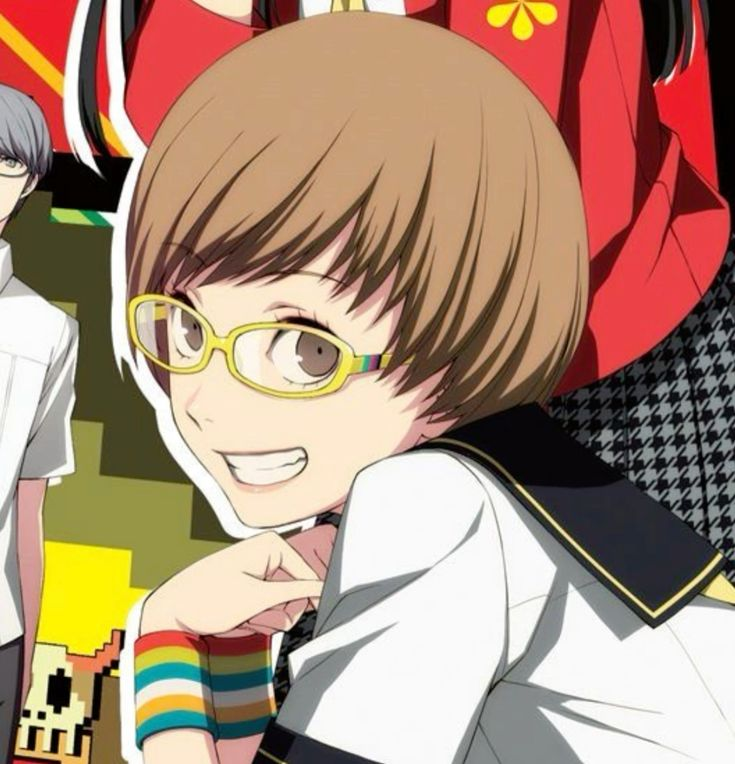
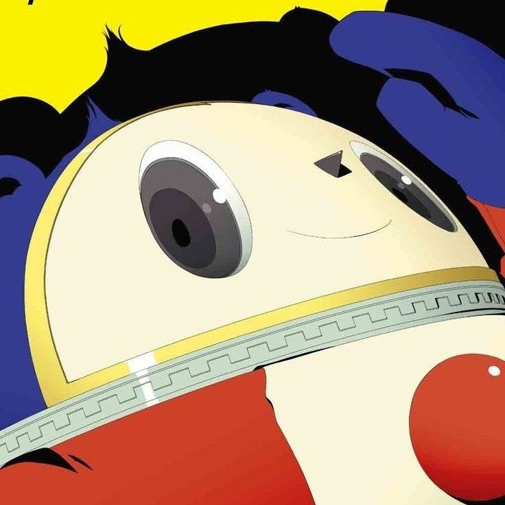

|
Yu Narukami |
Protagonist
Usually quiet, depicted as calm and polite
|
|
Yosuke Hanamura |
Extremely cheery and considerate but also clumsy
Good at handling people's emotions
Though he tends to be a wannabe ladies' man at some times
|
|  |
Chie Satonaka |
Energetic and upbeat
Obsessed with kung fu and martial arts
She's willing to protect others and has a strong sense of justice
|
|  |
Teddie |
Mascot
Seen as bubbly
Also childish and is pure of heart
|
|
Tohru Adachi |
Main antagonist of the game
Seems to be cheery and jolly at first
Usually makes corny jokes, treated as a comic relief
|